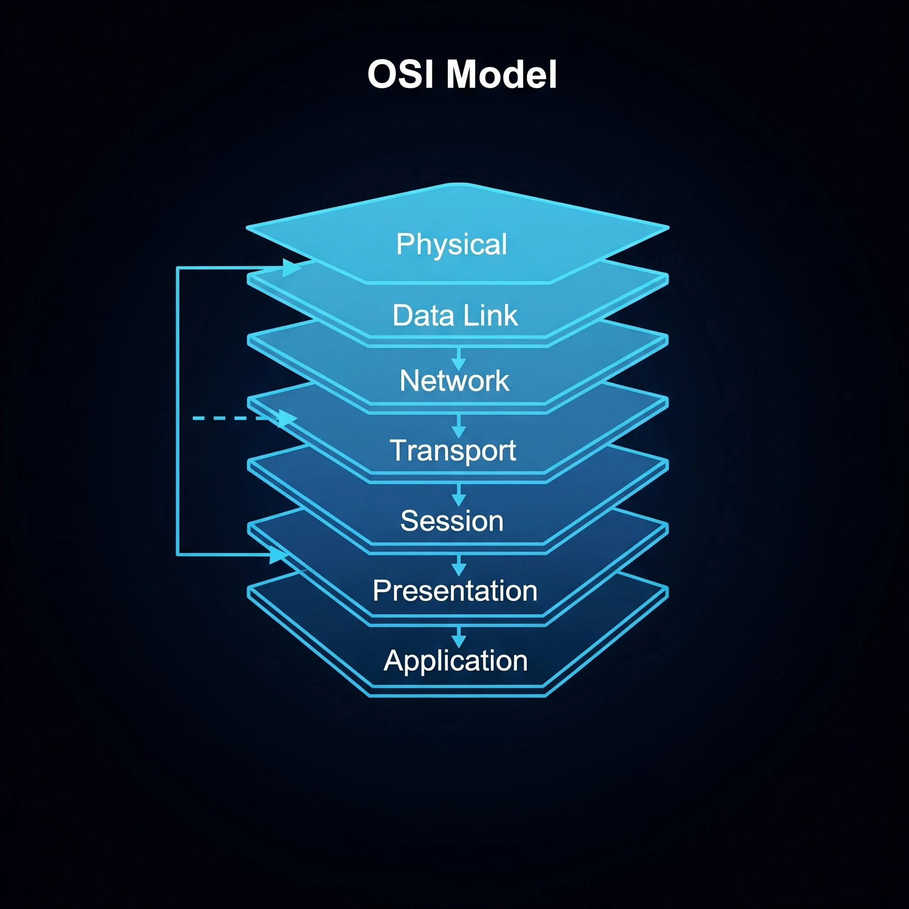

Los métodos HTTP son acciones que indican qué tipo de operación desea realizar un cliente sobre un recurso en el servidor. Estos métodos forman parte del protocolo HTTP y permiten operaciones como obtener información, enviar datos, actualizar recursos o eliminarlos.
| Método | Descripción | Uso típico |
|---|---|---|
| GET | Solicita un recurso del servidor | Cargar una página web |
| POST | Envía datos al servidor | Enviar un formulario |
| PUT | Actualiza un recurso existente | Editar un perfil |
| DELETE | Elimina un recurso | Borrar un registro |
Los códigos de estado HTTP son respuestas que envía el servidor para indicar el resultado de una solicitud realizada por el cliente. Estos códigos se agrupan en diferentes categorías según su significado: las respuestas exitosas, las redirecciones y los errores. Gracias a estos códigos, el navegador puede saber si la petición fue procesada correctamente o si ocurrió algún problema durante la comunicación.
Internet es una red global de computadoras interconectadas que se comunican entre sí mediante múltiples dispositivos y protocolos. Permite el intercambio de información y el acceso a servicios como páginas web, correos electrónicos, aplicaciones y más. Un ejemplo de cómo funciona Internet es el siguiente:
Cliente → Solicita una página web Servidor → Envía la respuesta (HTML, CSS, etc.) Ejemplo: Usuario escribe: www.google.com Servidor responde con la página web
La World Wide Web (WWW) es un sistema de documentos y recursos interconectados que funcionan sobre Internet. Estos recursos se acceden mediante navegadores web utilizando enlaces.
El modelo OSI (Open Systems Interconnection) es un marco de referencia que describe cómo los datos se transmiten a través de una red. Se compone de siete capas, cada una con funciones específicas:

Internet es fundamental en la sociedad moderna, ya que facilita la comunicación global, el acceso a información y servicios, y el desarrollo económico. Permite la educación en línea, el comercio electrónico, la colaboración remota y el entretenimiento digital, transformando la forma en que vivimos y trabajamos.
Ejemplos: Tipos de IP:
192.168.1.1 - IPv4 (32 bits)
3001:0da8:75a3:0000:0000:8a2e:0370:7334 - IPv6 (128 bits)
El DNS (Domain Name System) es un sistema que traduce los nombres de dominio legibles por humanos (como www.google.com) en direcciones IP numéricas que las computadoras utilizan para comunicarse entre sí en Internet. Funciona como una guía telefónica de Internet, permitiendo a los usuarios acceder a sitios web sin tener que recordar direcciones IP complejas.